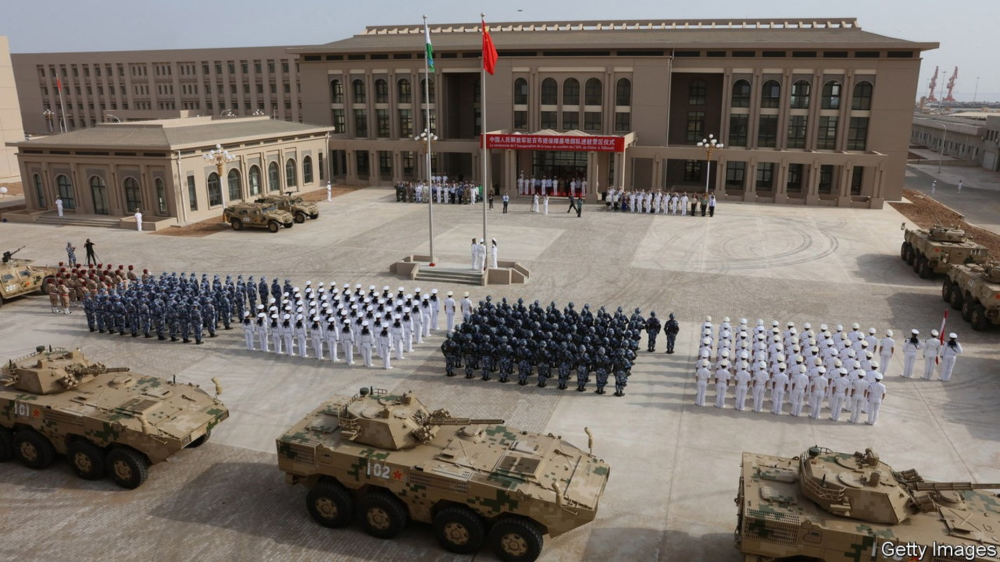
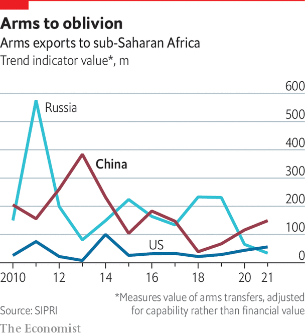

China is on a path to becoming a global military power; that path goes through Africa

In march, nearly five years after it opened, China’s military base at Djibouti had its firstport call, the Luomahu, a supply ship. There was no pomp and circumstance about it. But the structure it docked at is of more consequence. Jutting 1,100 feet (335m) into the Gulf of Aden is a pier large enough, say American analysts, to take aircraft-carriers, amphibious assault ships or nuclear submarines. And in Tanzania China is also pushing to revive a $10bn deepwater port that could take much the same hardware.
Listen to this story.Enjoy more audio and podcasts on iOS or Android.
Listen to this story
Save time by listening to our audio articles as you multitask
The Americans think China wants to extend the reach of its armed forces all round the Indian Ocean. Equatorial Guinea is in talks over a Chinese military base, they say. That would give China’s navy a foothold on the Atlantic coast. The Chinese are also exploring other options. “They have placed bets from Mauritania in the north to Namibia in the south and in many countries in-between,” General Stephen Townsend, head of Africa Command for the American army, told senators in April.
China clearly wants to be a global power. Since opening its base in Djibouti, ostensibly to support anti-piracy efforts, China has stepped up its military engagement in Africa. In 2018 its defence ministry hosted a China-Africa defence and security forum in Beijing. Almost 50 African countries attended, leaving with public commitments to increase co-operation. In the same year the Chinese conducted exercises in Cameroon, Gabon, Ghana and Nigeria. And in 2019 they conducted a joint exercise with Tanzania and a trilateral naval exercise with South Africa and Russia.
The Chinese are big arms suppliers, selling to 21 sub-Saharan armies between 2016 and 2020, more than did any other national supplier, says the Stockholm International Peace Research Institute. Sales include anti-tank missiles to Rwanda and armoured personnel carriers to Nigeria. Chinese military kit accounted for 20% of sub-Saharan Africa’s arms imports by value, behind only Russia (30%), which sells bigger-ticket stuff to a shorter list of buyers. America’s share was only 5%. China also donates older hardware as a sweetener. It has built military training facilities and barracks in Tanzania and Equatorial Guinea.
China is ready when America might be reluctant. “I had an African leader tell me a drowning man will reach for any hand,” General Townsend told senators. “Many have challenges with violent extremist organisations and they need to secure their country. So they will reach to any offer. Frequently those offers are fastest from China and Russia.” America’s help, General Townsend says, often comes with “strings” attached, such as upholding democratic values. But democracies get help from China, too. One American official tried to discourage a West African leader from letting China build a training facility. “I know,” the leader replied, “but I need that facility.” American officials find the number of Chinese military attachés in Africa has grown fast.

The impact of all this military activity is unclear. China is nothing like the destabilising force that Russia has been. It participates in un peacekeeping missions, and has no rogue private army to match Russia’s Wagner Group. China wants experience for its troops in Africa, but also the image of reliability as a partner. With economic interests in every African country, China seeks stability, not chaos.
China began expanding its role for the same reason that America and Britain once did: to protect economic interests, people and companies. The need for overseas expansion was obvious in 2011, when the navy helped evacuate over 30,000 Chinese citizens from Libya. And in March this year al-Shabab terrorists in Kenya shot five people dead and abducted two Chinese foremen, chopping both hands off one before they were released.
Yet China’s army is not there to fight al-Shabab. “They’re not putting skin in the game in Somalia,” says William Zana, who was until recently commanding general of American forces in the Horn of Africa. “They’re in the places where what they’re doing in security is purely to feed their business interests.” Partly that is because some African partners, including Kenya, prefer to work with American troops, who have expertise in battling Jihadists. But China’s willingness to work without “strings” also draws it naturally to authoritarian states as security partners. Its ambitions may merely strengthen abysmal autocrats.
Ethiopia’s war with Tigrayan rebels offers an example. A former American official talked of meeting a Chinese envoy early in the conflict and finding their interests overlapped. “China was deeply worried about the deterioration of the integrity of the state, as were we,” he said. But instead of calling for peace talks, China apparently helped arm the regime of Abiy Ahmed with drones. “So their solution was probably different from our solution.”
A policeman’s lot
If the Chinese army wanted to convey the image of a selfless policeman, it did not get the best start in Djibouti. The original pretext for its base was to support anti-piracy missions in the Gulf of Aden. America has a base less than ten miles away in Camp Lemonnier, established after the September 11th attacks on a former garrison of the French foreign legion. It is the only American base in Africa. France, Italy and Japan also have bases in Djibouti. But the Chinese military presence has not meshed well with others. In 2018 American officials accused China of targeting military planes with lasers, causing minor eye injuries to pilots. China has now put a stop to that behaviour, which probably annoyed their hosts in Djibouti as much as the Americans. But American officials think China’s presence at Djibouti is less about piracy and more about learning how to operate an overseas base and project power.
More bases seem sure to come. Hu Bo of Peking University wants to see the army “stepping out” to “distribute power on a global scale”. Other Chinese analysts openly advocate a more aggressive “exterior” strategy of pushing into waters far from home. One aim, writes Ryan Martinson of the us Naval War College in Newport, Rhode Island, is to divert American attention from Chinese waters. Africa is a prime hunting ground for bases. China is involved in financing, building or operating 61 ports in 30 African countries, writes Isaac Kardon, also of the us Naval War College. Chinese warships have visited some of them. American officials are seeking to dissuade hosts from allowing much more than port calls.
Most African countries are not keen to alienate the world’s biggest superpower. The president of Tanzania, Samia Suluhu Hassan, visited the White House in April. She told American officials that her country would not “engage in any activity that would compromise their sense of sovereignty”, says a senior official. Yet the Americans worry that Tanzania might allow China’s navy to use its ports even without a formal base. Equatorial Guinea has also denied agreeing to a Chinese military base, but it is a logical candidate. Piracy is a scourge in the Gulf of Guinea, giving China a pretext. A Chinese company has developed a deepwater port. And the corrupt dictatorship is in want of cash. The imf approved a bail-out in 2019. And America and its allies have seized assets from the family of the president, Teodoro Obiang Nguema Mbasogo.
In the past seven months Jon Finer, deputy national security adviser, and Molly Phee, assistant secretary of state for Africa, have both visited Equatorial Guinea to press the case against a Chinese base. Their visits highlight what America believes it can offer that China cannot: a veneer of respectability. For a pariah dictatorship, embarrassed by accusations of corruption and human-rights abuses, that might be tempting. Then, just days after Mr Finer’s visit, Xi Jinping spoke by telephone with Mr Obiang.
For every good that China wants from the continent, African leaders can extract something of value to them. For each concern America expresses about China’s strategic aims, governments can play that to their advantage as well. China may be acting out of self-interest on the continent, especially when expanding its military presence. But Africa’s leaders say they deal with China with their eyes open, looking out for their own interests.
The Biden administration is not sure whether its lobbying worked on Equatorial Guinea. One official reports the regime as saying “unequivocally that they have no plans to move forward” with a Chinese base. After Ms Phee’s visit the vice-president tweeted his thanks for a gift of a compass. He did not say in which direction it was pointing.■